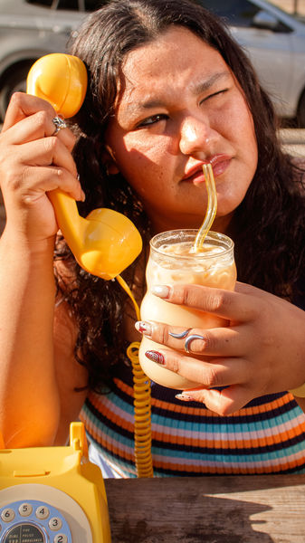
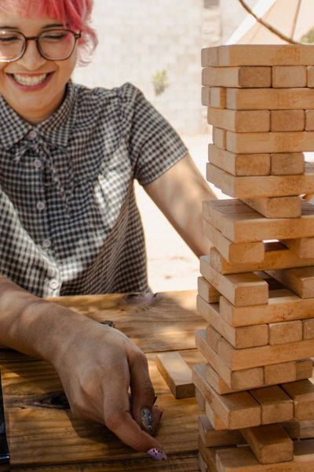
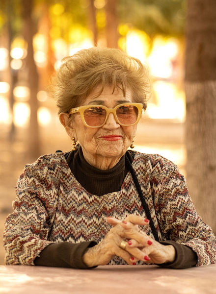

Diseño & Fotografía
Te comparto lo que hago, porque hacerlo es expresar mi sentir & pensar
Soy una fotógrafa con interés en la fotografía de producto, editorial y familiar. Me encanta proyectar emociones genuinas en cada proyecto.
Soy una fotógrafa con interés en la fotografía de producto, editorial y familiar. Me encanta proyectar emociones genuinas en cada proyecto.

Soy una estudiante de la Licenciatura de Diseño Gráfico, con interés en la fotografía de producto, editorial y familiar. Me encanta proyectar emociones genuinas en cada proyecto, ya sea una sesión planeada o un momento espontáneo que decidí capturar con mi cámara.
Actualmente hago mi servicio social en Rectoría, apoyando en proyectos de comunicación visual, diseño gráfico y contenido para redes sociales, gracias a eso, puedo decir que tengo sólo un poco de experiencia frente a cámaras. Fuera de eso, siempre ando buscando la próxima foto: un café bonito, un atardecer, un perrito que se deja retratar.

Fue un viaje a Bearizona ubicado en uhn pueblito de Flagstaff llamado Williams, me encantó.

Fue un proyecto muy divertido e interesante, los dueños confiaron en mí y en mis amigas, y todos quedamos felices y contentos.

Fueron fotos tomadas por diversión, pero me encantó el resultado, muy bonitas y reales.

Una salida familiar, que se convirtió en una sesión para mi abuela.